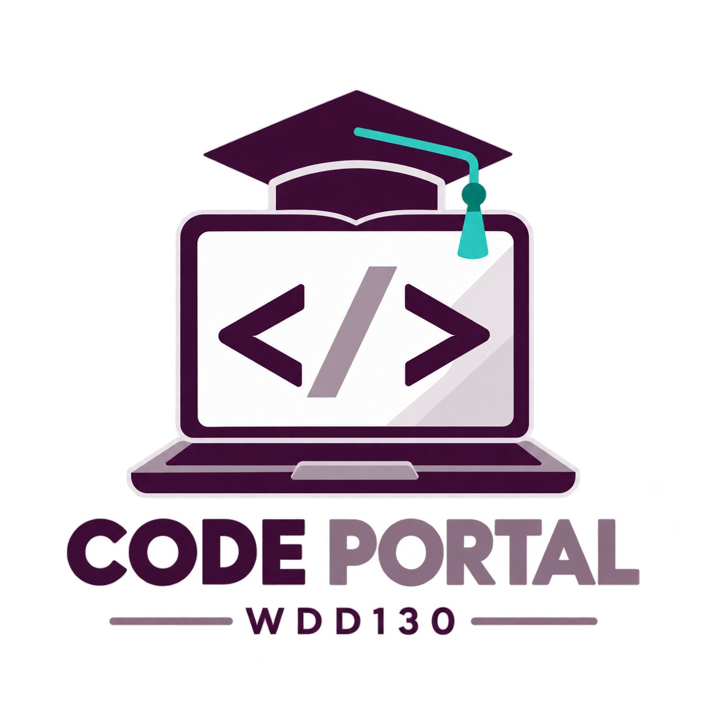
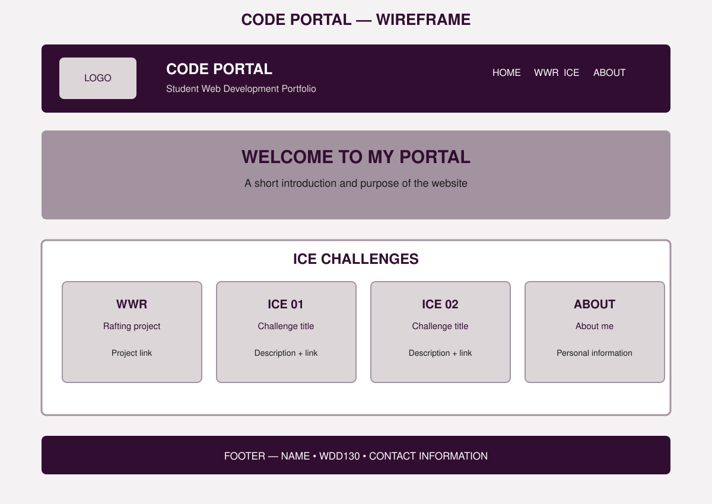

WDD130 • PROGRESS CHECK 100
Portal Page Plan and Design
Code Portal will be a portfolio website for my WDD130 projects. It will organize my WWR project, ICE challenges, and information about me as a software engineering student.

The laptop represents web development, the code symbols represent programming, and the graduation cap represents education.
Oswald — headings and navigation
Raleway — paragraphs and descriptions. Arial will be the backup font.
These fonts create a clean, modern, and readable portfolio style.
